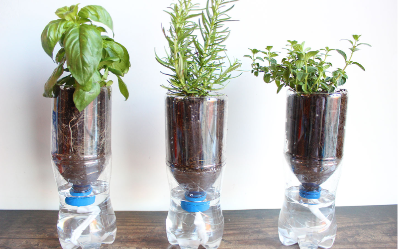
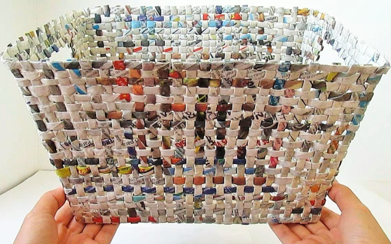
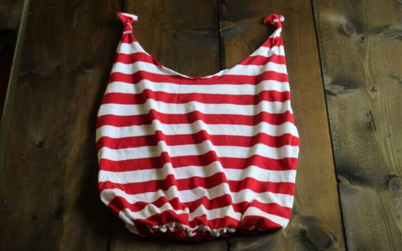
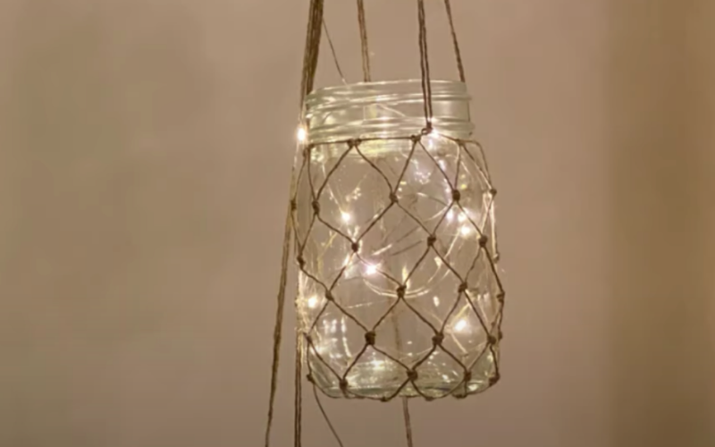
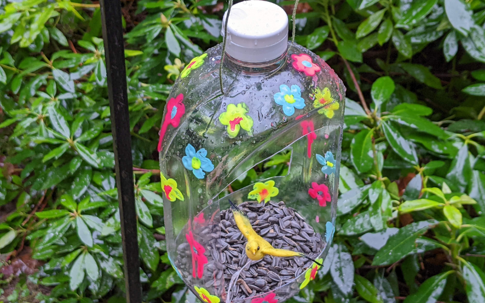
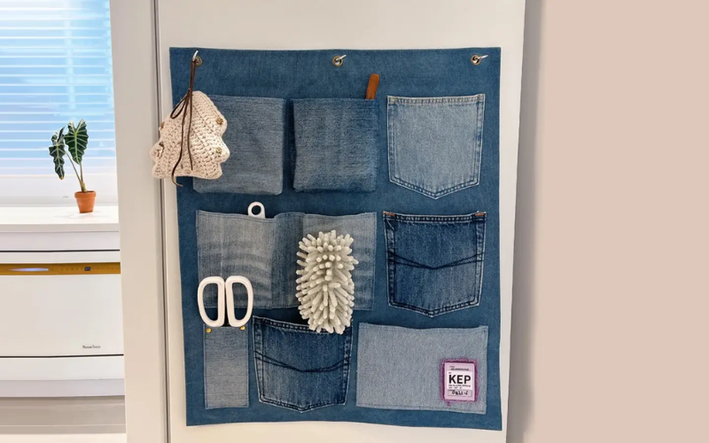

Select a category or type your material below to see instant upcycling ideas.

Turn old 1.5L bottles into a sustainable self-watering system for your herbs.

Roll up old newspapers to weave a rustic, sturdy basket for home organization.

Create a stylish grocery bag from an old t-shirt without using a single needle.

Transform jam jars into beautiful hanging lanterns for outdoor lighting.

Cut and paint detergent bottles to create feeding stations for local birds.

Use the pockets of old jeans to create a handy wall organizer for stationery.